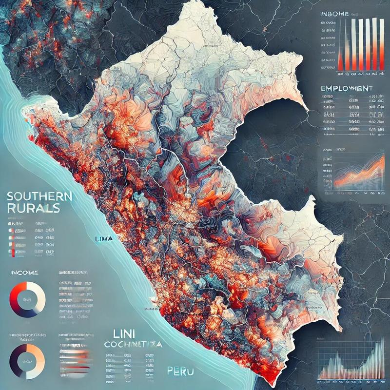
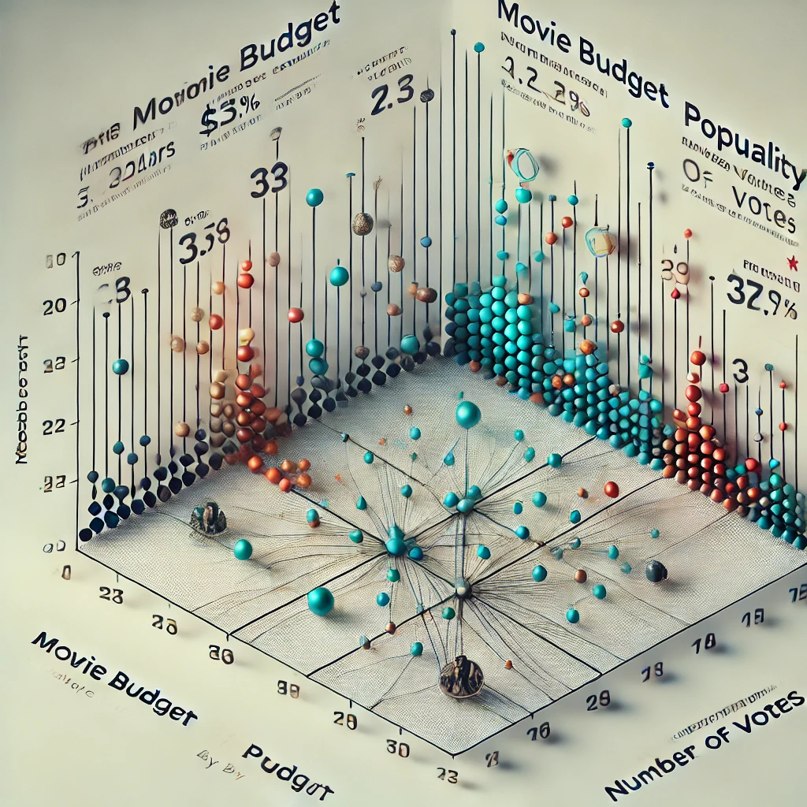
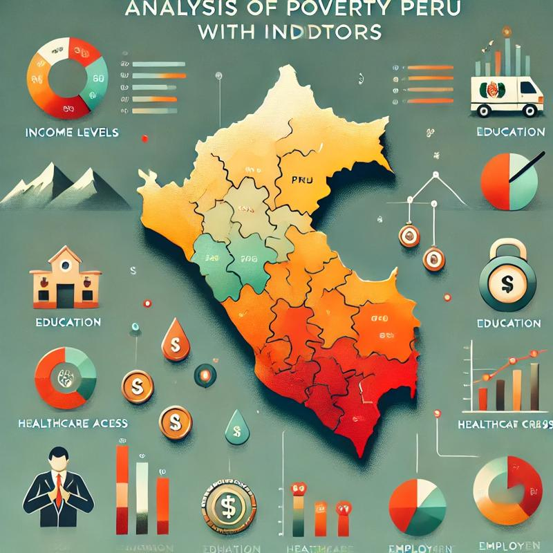

Implementé técnicas avanzadas de limpieza, análisis y visualización de datos para revelar patrones críticos de pobreza y desigualdad a nivel regional. Aproveché Python para procesar y analizar grandes volúmenes de datos de manera eficiente, utilizando librerías especializadas para cálculos estadísticos y geoespaciales. Integré los resultados en un dashboard interactivo en Tableau, facilitando la transformación de datos complejos en información clara y accionable para optimizar el análisis socioeconómico.

Este proyecto analiza la evolución de los precios inmobiliarios en Lima entre 2013 y 2024, enfocándose en las diferencias entre el sector alto y el sector medio. A través de técnicas estadísticas como la regresión lineal y el cálculo del Crecimiento Anual Compuesto (CAGR), se evaluó el impacto de factores como la pandemia de COVID-19 y las dinámicas del mercado. Además, se proyectaron precios hasta 2040, proporcionando una visión valiosa para la toma de decisiones en el sector inmobiliario. El análisis se realizó utilizando herramientas de Python como Pandas, Matplotlib, Seaborn y SciPy.
Este proyecto es un análisis de datos en SQL sobre mortalidad y vacunación global relacionadas con el COVID-19 entre 2020 y 2024. Incluye la creación y carga de tablas de datos, cálculos de tasas de mortalidad y vacunación, y comparaciones por país, región y periodos. El análisis culmina en la preparación de datos para visualización, proporcionando insights claros sobre la evolución de la pandemia y el avance en la vacunación mundial.
Este proyecto utiliza análisis de datos médicos para identificar factores de riesgo y predecir enfermedades cardíacas. A través de herramientas como Python, Pandas y Seaborn, se procesaron y limpiaron datos, calculando el IMC para clasificar el sobrepeso y normalizando variables como colesterol y glucosa. Se realizó un análisis exploratorio visualizando correlaciones entre variables clave como peso, actividad física y tabaquismo, destacando su impacto en la salud cardiovascular. Este análisis permite identificar los factores más relevantes para la prevención de enfermedades cardíacas.

Este proyecto analiza datos cinematográficos entre 1980 y 2020 para identificar los factores que influyen en los ingresos brutos de las películas. Usando Python (pandas, numpy, seaborn, matplotlib), se realizó un análisis de correlación que reveló que el presupuesto y los votos son los factores más influyentes en los ingresos brutos. Además, se desarrolló un dashboard interactivo en Tableau para visualizar indicadores clave como el ROI, presupuesto e ingresos brutos.
Este proyecto, analizado utilizando Python, explora cómo factores como la educación, ocupación y lugar de origen influyen en los ingresos globales. Destaca que el 46.54% de las personas con educación avanzada ganan más de $50,000, frente al 17.37% sin este nivel educativo. Irán lidera con el mayor porcentaje de altos ingresos (41.86%), y en India, los profesionales especializados predominan en este grupo. Mediante técnicas avanzadas de análisis de datos con Python, el estudio identifica patrones clave, revelando cómo la educación y la demografía afectan las oportunidades económicas a nivel global.

Este proyecto de Análisis de Sentimientos en Reseñas de Alimentos de Amazon aplicó técnicas de procesamiento de lenguaje natural (PLN) y análisis de datos para evaluar las opiniones de los consumidores. Utilizando modelos como VADER, se clasificaron los sentimientos de las reseñas (positivos, negativos y neutros). El análisis incluyó la tokenización, etiquetado gramatical y el reconocimiento de entidades nombradas (NER) para estructurar los datos textuales. Finalmente, se visualizó la distribución de las calificaciones con gráficos de barras. El proyecto permitió desarrollar habilidades clave en el análisis de datos y procesamiento de textos, mientras proporciona una comprensión profunda sobre cómo los consumidores perciben los productos alimenticios.
Este proyecto utiliza herramientas avanzadas como Python, Pandas, Matplotlib y Seaborn para aplicar habilidades clave de análisis de datos. Estas incluyen limpieza y depuración de datos, manejo y transformación de series temporales, reagrupación y visualización de datos. El análisis se enfocó en las vistas diarias del foro de freeCodeCamp (2016-2019), identificando un crecimiento sostenido, patrones estacionales destacados en meses como diciembre y octubre, y picos relacionados con eventos clave. Estas técnicas y herramientas permitieron extraer insights estratégicos que respaldan decisiones informadas y la planificación de estrategias futuras.
Este proyecto analiza el aumento del nivel del mar hasta 2050 utilizando datos históricos de CSIRO y NOAA. Se emplearon herramientas como Python, Pandas, Matplotlib, Seaborn y Scipy, junto con modelos de regresión lineal, para la manipulación de datos, visualización y proyección de tendencias. Las proyecciones estiman un nivel del mar de 15.38 pulgadas (CSIRO) y 12.56 pulgadas (NOAA), destacando la aceleración reciente en el incremento y la urgencia de mitigar los impactos del cambio climático, especialmente en zonas costeras vulnerables.

Este proyecto analiza de manera exhaustiva las dimensiones de la pobreza en el Perú durante 2019, utilizando técnicas avanzadas de análisis de datos con Python y sus principales librerías, como Pandas, NumPy, Matplotlib y Seaborn. A partir de un dataset con más de 72,000 registros, se exploraron ingresos, empleo y características geográficas, destacando que el 32.54% de los hogares vive en pobreza o pobreza extrema, con mayor incidencia en zonas rurales. Además, se identificó que el 81% de los hogares enfrenta múltiples privaciones. Los resultados fueron visualizados en un dashboard interactivo en Tableau, proporcionando un panorama claro y accionable para entender y abordar la pobreza en el Perú.
Este proyecto consistió en limpiar, transformar y analizar datos del mercado inmobiliario de Nashville utilizando PostgreSQL para asegurar la calidad y consistencia de la información. Implementé técnicas avanzadas de manejo de datos, como estandarización de fechas, partición de columnas, eliminación de duplicados y actualización de valores faltantes. Posteriormente, exporté los datos limpios y los visualicé en Tableau, creando dashboards interactivos para analizar tendencias de precios, distribución geográfica y tipos de propiedades.